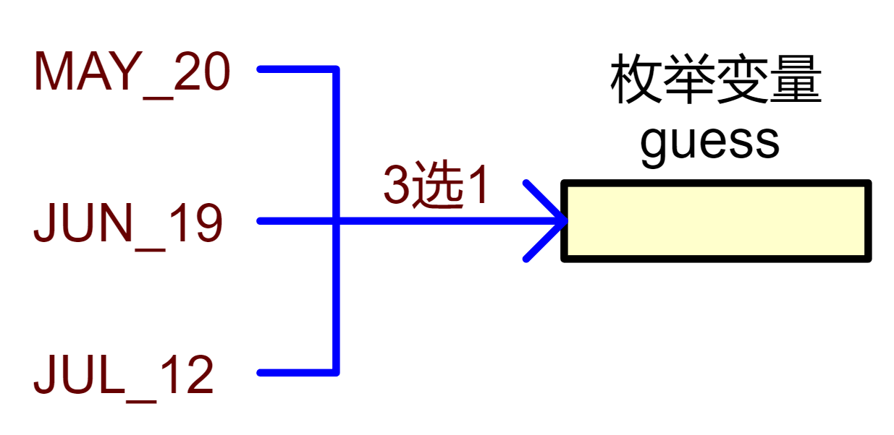

<!DOCTYPE lake>
<h1 data-lake-id="OXapG" id="OXapG"><span data-lake-id="u1949804b" id="u1949804b">1&gt; 功能需求</span></h1><p data-lake-id="u7ca7e0c0" id="u7ca7e0c0"></p><p data-lake-id="u6a56c502" id="u6a56c502"><span data-lake-id="u8c38a772" id="u8c38a772">场景：</span></p><p data-lake-id="ub7d2bf34" id="ub7d2bf34"><span data-lake-id="u9591d7ca" id="u9591d7ca">🐧</span><span data-lake-id="u903581d0" id="u903581d0">女朋友突然灵魂拷问</span></p><p data-lake-id="u17c9f03a" id="u17c9f03a"><span data-lake-id="u0a022fa1" id="u0a022fa1">"我的生日是多少？"</span></p><p data-lake-id="u72b5c6cc" id="u72b5c6cc"><span data-lake-id="ua98f3639" id="ua98f3639">你：（努力回忆）</span></p><ul list="u9e92d1b5"><li data-lake-id="u0e97cf69" fid="u266f73d4" id="u0e97cf69"><span data-lake-id="ued860d12" id="ued860d12">"是...5月...20号？" </span><span data-lake-id="uefb0f08d" id="uefb0f08d">❌</span></li><li data-lake-id="u4c8b4dbc" fid="u266f73d4" id="u4c8b4dbc"><span data-lake-id="u62bfa042" id="u62bfa042">"不对不对，6月18？" </span><span data-lake-id="u117e66e4" id="u117e66e4">❌</span></li><li data-lake-id="u79a1245c" fid="u266f73d4" id="u79a1245c"><span data-lake-id="ue62fe90b" id="ue62fe90b">"等等，好像是7月..." </span><span data-lake-id="u3dd9c808" id="u3dd9c808">💥</span><span data-lake-id="u0982ae72" id="u0982ae72">（女友已暴怒）</span></li></ul><span class="yuque-card-unsupported">[codeblock]</span><p data-lake-id="u872d1302" id="u872d1302"><span data-lake-id="u34152e84" id="u34152e84">❓</span><span data-lake-id="u738714c6" id="u738714c6">问题：</span></p><p data-lake-id="u8d59de86" id="u8d59de86"><span data-lake-id="uf5166f55" id="uf5166f55">这是</span><span data-lake-id="u88359532" id="u88359532" style="color: #DF2A3F">填空题</span><span data-lake-id="u948d3617" id="u948d3617">，完全依赖记忆力，非常容易出差；</span></p><p data-lake-id="u5397930c" id="u5397930c"><span data-lake-id="ubc1b037c" id="ubc1b037c">没有范围限制（可能说出"13月40号"）</span></p><p data-lake-id="u84d50013" id="u84d50013"><br/></p><p data-lake-id="uf2ff0a32" id="uf2ff0a32"><span data-lake-id="u15a02ebc" id="u15a02ebc">能不能把他变成选择题呢？</span><span data-lake-id="uc8891321" id="uc8891321">😀</span><span data-lake-id="ub53082bb" id="ub53082bb">，</span><code data-lake-id="u08272c02" id="u08272c02"><span data-lake-id="u3fe28d6e" id="u3fe28d6e" style="color: #DF2A3F">枚举enum</span></code><span data-lake-id="u2a1daaea" id="u2a1daaea">就是干这活的， 把填空题改为选择题！</span></p><hr/><h1 data-lake-id="m9SuL" id="m9SuL"><span data-lake-id="u37247e1a" id="u37247e1a">2&gt; 填空题变选择题</span></h1><span class="yuque-card-unsupported">[codeblock]</span><p data-lake-id="u48ca620a" id="u48ca620a"><span data-lake-id="ubbd8b3a8" id="ubbd8b3a8">枚举变量成功的把填空题变为了选择题</span></p><p data-lake-id="u03f5005f" id="u03f5005f"><span data-lake-id="u9cf1fb02" id="u9cf1fb02">🐧</span><span data-lake-id="uf3695ff5" id="uf3695ff5">啥时候我生日呢？</span></p><p data-lake-id="ud0cfd9f1" id="ud0cfd9f1"><span data-lake-id="ufe2dec36" id="ufe2dec36">A.</span><code data-lake-id="u7c58f8b4" id="u7c58f8b4"><span data-lake-id="u5e258dd4" id="u5e258dd4">(MAY_20)</span></code><span data-lake-id="u66f0c204" id="u66f0c204">  B.</span><code data-lake-id="ue5cd4b78" id="ue5cd4b78"><span data-lake-id="u29227be6" id="u29227be6">(JUN_19)</span></code><span data-lake-id="u9b04a137" id="u9b04a137">   C.</span><code data-lake-id="u9a56b725" id="u9a56b725"><span data-lake-id="ua98ee8f3" id="ua98ee8f3">(JUL_12)</span></code></p><hr/><h1 data-lake-id="Pf9Ls" id="Pf9Ls"><span data-lake-id="u0619795f" id="u0619795f">3&gt; 枚举（enum）类型</span></h1><h2 data-lake-id="Wl8HJ" id="Wl8HJ"><span data-lake-id="uc50bf52f" id="uc50bf52f">3.1&gt; 基本语法</span></h2><p data-lake-id="uda27887f" id="uda27887f"><span data-lake-id="u2c34b943" id="u2c34b943">枚举(enum)是C语言中一种</span><span data-lake-id="u93412aba" id="u93412aba" style="color: #DF2A3F">用户自定义</span><span data-lake-id="u7e846d73" id="u7e846d73">的数据类型，</span></p><p data-lake-id="u83ca44c0" id="u83ca44c0"><span data-lake-id="u471c9c77" id="u471c9c77">它允许程序员为一组整数值赋予有意义的名称，从而提高代码的可读性和可维护性。</span></p><span class="yuque-card-unsupported">[codeblock]</span><h2 data-lake-id="hsXEL" id="hsXEL"><span data-lake-id="u97f53730" id="u97f53730">3.2&gt; 内存占用</span></h2><span class="yuque-card-unsupported">[codeblock]</span><span class="yuque-card-unsupported">[codeblock]</span><p data-lake-id="u32023363" id="u32023363"><span data-lake-id="u4f96db20" id="u4f96db20">🐧</span><span data-lake-id="ucfee1cc5" id="ucfee1cc5">枚举变量占用4字节空间，与int变量一样；</span></p><p data-lake-id="u347c849f" id="u347c849f"><span data-lake-id="ucdea9451" id="ucdea9451">枚举变量本质就是</span><code data-lake-id="uc0899bd4" id="uc0899bd4"><strong><span class="lake-fontsize-12" data-lake-id="u0ba5be79" id="u0ba5be79" style="color: #2F4BDA">int</span></strong></code><span data-lake-id="u59d010b4" id="u59d010b4">型的整数，只是告诉程序员，要赋值，就从常量列表中选择；</span></p><p data-lake-id="u4a965561" id="u4a965561"></p><hr/><h2 data-lake-id="EDOuE" id="EDOuE"><span data-lake-id="u0d424dc3" id="u0d424dc3">3.3&gt; 常量列表</span></h2><h3 data-lake-id="mRbSC" id="mRbSC"><span data-lake-id="u7164697a" id="u7164697a">3.3.1&gt; 不指定值</span></h3><span class="yuque-card-unsupported">[codeblock]</span><span class="yuque-card-unsupported">[codeblock]</span><p data-lake-id="u19687d68" id="u19687d68"><span data-lake-id="ua3826105" id="ua3826105">🤠</span><span data-lake-id="u72ec72d6" id="u72ec72d6">枚举常量实际上是整数值；</span><span data-lake-id="u2ede4b99" id="u2ede4b99" style="color: #2F4BDA">// 如果不指定，默认从0开始，依次递增1；</span></p><hr/><h3 data-lake-id="azmBC" id="azmBC"><span data-lake-id="u2ac62807" id="u2ac62807">3.3.2&gt; 部分指定</span></h3><span class="yuque-card-unsupported">[codeblock]</span><span class="yuque-card-unsupported">[codeblock]</span><p data-lake-id="ub8e70fa6" id="ub8e70fa6"><span data-lake-id="u5e3ae30a" id="u5e3ae30a">🤠</span><span data-lake-id="u4e6e7491" id="u4e6e7491" style="color: #000000">枚举常量实际上是整数值；</span><span data-lake-id="ua8b9a33a" id="ua8b9a33a" style="color: #2F4BDA"> // 如果部分指定，未指定的会基于前一个值+1；</span></p><hr/><h1 data-lake-id="jDEc7" id="jDEc7"><span data-lake-id="u09ecbf91" id="u09ecbf91">4&gt; 枚举应用</span></h1><p data-lake-id="u6dbfd244" id="u6dbfd244"><span data-lake-id="ue4676564" id="ue4676564">嵌入式开发中经常用枚举变量来配置参数，举个类似的例子</span></p><span class="yuque-card-unsupported">[codeblock]</span><p data-lake-id="uc329fb8a" id="uc329fb8a"><span data-lake-id="u53b5af56" id="u53b5af56">类似配置电脑的分辨率，电脑的模式，都成了选择题；</span></p><p data-lake-id="ua66e21fa" id="ua66e21fa"><span data-lake-id="uaf7139ce" id="uaf7139ce">❓</span><span data-lake-id="u4e5b98d2" id="u4e5b98d2">问题：</span><code data-lake-id="u01e69d35" id="u01e69d35"><span data-lake-id="ua08bead3" id="ua08bead3" style="color: #601BDE">enum </span><span data-lake-id="u49f867e6" id="u49f867e6" style="color: #ED740C">PhoneMode</span></code><span data-lake-id="u8b402675" id="u8b402675" style="color: #601BDE"> </span><span data-lake-id="u6de0249f" id="u6de0249f" style="color: #000000">名字太长，咋办，typedef</span></p><span class="yuque-card-unsupported">[codeblock]</span><hr/><h1 data-lake-id="nNerv" id="nNerv"><span data-lake-id="u5ebfe085" id="u5ebfe085">🐻</span><span data-lake-id="ud9bde596" id="ud9bde596">实践练习：</span></h1><p data-lake-id="uf88ee5af" id="uf88ee5af"><span data-lake-id="u6d3a2687" id="u6d3a2687">查阅资料和代码验证，文档总结 枚举和宏定义的区别；</span></p>